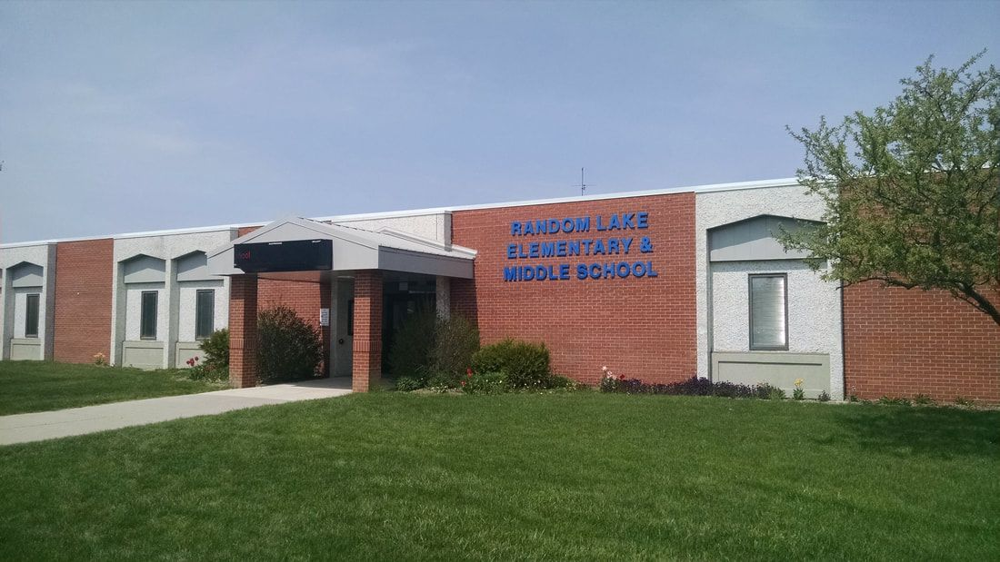

"Universitet i bergen, som har vunnet 4 grammys og 1 fredhets pris"
Random skole
Vi vil at studentene våre skal vite hvor de er på vei, og være godt rustet til
yrkeslivet som møter dem etter studiene. Derfor sørger vi for at studentene våre får innblikk i arbeidslivet under hele utdanningen Vi har praksis- og mentorordninger som sørger for både faglig og personlig kontakt mellom student og arbeidsliv.
Randomskole er ikke et universitet som bare har nesa i bøkene. Vi har blikket rettet fremover og vil bidra til at våre studenter faktisk kan skape morgendagens løsninger. Hos oss er det møtet mellom teori og praksis som står i fokus. Derfor har alliert vi oss med arbeidslivet, og derfor allierer arbeidslivet seg med oss.
Studentene er hjertet
i randomskole er studentene hjerte. Det er engasjementet for studentene som kjennetegner oss. randomskole skal ha et bredt tilbud og store muligheter, men samtidig tilby nær kontakt og kort vei til nærmeste rådgiver.
Alle våre 8 campuser skal være trygge og gode steder å være, og studentene skal vite at det alltid finnes noen der for å hjelpe dem. Enten det er med en spesielt krevende oppgave eller veiledning mot fremtidig yrke.
Framtidens arbeidskraft
Vårt mål som universitet er å skape verdier både for den enkelte student og for næringslivet, offentlig sektor og samfunnslivet for øvrig. Dette gjør vi med våre aller beste virkemidler; utdanning og forskning.
Vi har tett dialog med offentlig sektor og næringslivet, både på nye og allerede etablerte arenaer, slik at vi forstår hvilke behov som oppstår og hvilke utfordringer vi må løse. Det er derfor våre studier er moderne, oppdaterte og fremtidsrettede. Studentene har tett kontakt med arbeidslivet, og er godt rustet til å gå ut i yrkeslivet når studiene er over. Randomskole utdanner arbeidstakerne Norge søker